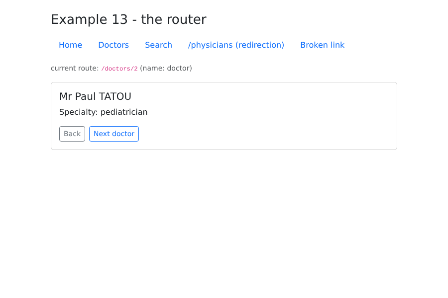
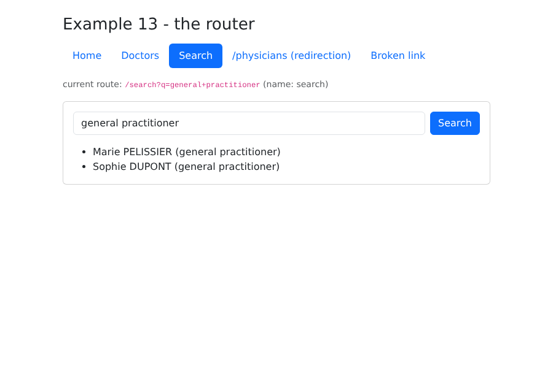
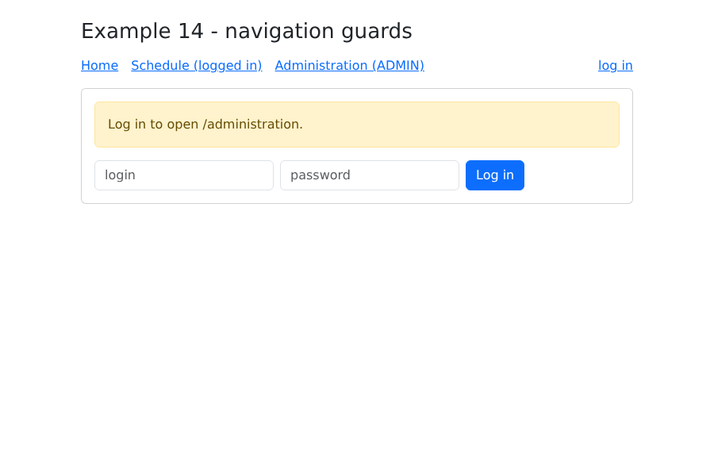
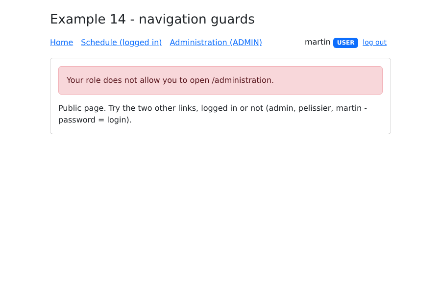

4. Roteamento
Uma aplicação [Vue.js] carrega apenas uma página, HTML. No entanto, a aplicação [RdvMedecins] tem uma página de login, uma página de agenda, uma página “Minha área”... Cada uma tem sua própria URL ([/login], [/schedule], [/my-area]), que pode ser adicionada aos favoritos, e os botões Voltar e Avançar do navegador funcionam. Esse é o trabalho do roteador, a biblioteca [vue-router].
4.1. Exemplo 13: O roteador
O roteador é adicionado à aplicação em [main.ts]:
| // =========================================================================
// 13-router/src/main.ts
// -------------------------------------------------------------------------
// app.use(router): o roteador é adicionado à aplicação. Os componentes
// <RouterLink> e <RouterView> passam então a ser utilizáveis em qualquer lugar.
// =========================================================================
import { createApp } from 'vue';
import 'bootstrap/dist/css/bootstrap.min.css';
import App from './App.vue';
import { router } from './router';
createApp(App).use(router).mount('#app');
|
- Linha 13: [app.use(...)] instala uma extensão ([plugin]): os componentes [<RouterLink>] e [<RouterView>], e as funções [useRoute()] e [useRouter()], passam a estar disponíveis em todo lugar.
Os dados do exemplo, “fixos no código”:
| // dados "fixos no código" (hard-coded), para não depender de um servidor neste exemplo
export interface Doctor {
id: number;
title: string;
firstName: string;
lastName: string;
specialty: string;
}
export const DOCTORS: Doctor[] = [
{ id: 1, title: 'Mme', firstName: 'Marie', lastName: 'PELISSIER', specialty: 'general practitioner' },
{ id: 2, title: 'Mr', firstName: 'Paul', lastName: 'TATOU', specialty: 'pediatrician' },
{ id: 3, title: 'Melle', firstName: 'Sophie', lastName: 'DUPONT', specialty: 'general practitioner' },
];
|
As rotas:
| // =========================================================================
// 13-router/src/router.ts - as ROTAS da aplicação
// -------------------------------------------------------------------------
// Uma aplicação Vue.js é uma aplicação de página única (SPA: Single
// Page Application): o navegador carrega apenas UMA página HTML. Quando um
// link interno é clicado, nenhuma requisição é enviada ao servidor:
// o roteador muda o endereço exibido pelo navegador e substitui o
// componente exibido em <RouterView>.
//
// Uma rota associa um CAMINHO a um COMPONENTE (chamado de "view", no
// sentido de uma tela da aplicação):
// '/doctors/:id' :id é um parâmetro (/doctors/2 -> id = "2");
// '/:pathMatch(.*)*' qualquer caminho: a página "não encontrado"
// (a rota mais precisa sempre vence).
//
// createWebHashHistory: os endereços têm a forma /13-router/#/doctors/2.
// Tudo o que vem depois do # fica no navegador: recarregar a página (F5)
// sempre solicita /13-router/ novamente, que existe. É o modo mais simples
// quando o servidor não sabe nada sobre o roteador - aqui, o servidor Vite, que
// atende vinte exemplos ao mesmo tempo. O estudo de caso usará endereços
// "limpos" (createWebHistory: /schedule, /doctors...).
// =========================================================================
import { createRouter, createWebHashHistory } from 'vue-router';
import Home from './views/Home.vue';
import DoctorList from './views/DoctorList.vue';
import DoctorDetail from './views/DoctorDetail.vue';
import Search from './views/Search.vue';
import NotFoundPage from './views/NotFoundPage.vue';
export const router = createRouter({
history: createWebHashHistory(),
routes: [
{ path: '/', name: 'home', component: Home },
{ path: '/doctors', name: 'doctors', component: DoctorList },
// props: true -> o parâmetro :id é passado ao componente como uma PROP
// (o componente deixa então de depender do roteador: mais fácil de reutilizar)
{ path: '/doctors/:id', name: 'doctor', component: DoctorDetail, props: true },
{ path: '/search', name: 'search', component: Search },
// um redirecionamento: o endereço antigo leva ao novo
{ path: '/physicians', redirect: '/doctors' },
{ path: '/:pathMatch(.*)*', name: 'not-found', component: NotFoundPage },
],
});
|
- Linhas 33–43: uma rota associa um caminho a um componente, chamado de “view” (no sentido de tela da aplicação; isso nada tem a ver com as views do [Handlebars] do curso [NestJS], exceto pelo papel que desempenham);
- linha 34: uma rota pode ter um nome, que é mais estável que seu caminho para criar links;
- Linha 38: [:id] é um parâmetro: [/doctors/2] exibe [DoctorDetail] com [id = "2"]. A opção [props: true] o passa ao componente como uma prop: o componente deixa então de depender do roteador;
- linha 41: um redirecionamento: o endereço [/physicians] leva a [/doctors];
- linha 42: um caminho curinga: a página “página não encontrada”. Ela só recebe endereços que nenhuma outra rota reconhece: o [vue-router] ordena as rotas pela precisão de seu caminho; a mais precisa tem precedência (ela continua sendo colocada por último, para facilitar a leitura);
- linha 32: o modo de histórico. Com [createWebHashHistory], os endereços têm a forma [/13-router/#/doctors/2]: tudo o que vem depois de [#] nunca é enviado ao servidor, e recarregar a página (F5) sempre solicita [/13-router/], que existe. Esta é a abordagem mais simples quando o servidor não conhece as rotas do cliente, que é o caso do servidor do [Vite], que serve vinte exemplos ao mesmo tempo. O estudo de caso usará [createWebHistory] e endereços “limpos” ([/schedule]), o que exige um pequeno esforço adicional do lado do servidor.
A “casca” da aplicação:
| <!--
=========================================================================
13-router/src/App.vue - the "shell" of the application
-------------------------------------------------------------------------
- <RouterLink to="...">: an internal link. It produces an <a> tag,
but a click does not reload the page: it is the router that acts.
The link of the displayed page receives the class "router-link-active"
(here replaced by "active", the Bootstrap one);
- <RouterView />: the place where the component of the current route
is displayed.
=========================================================================
-->
<script setup lang="ts">
import { RouterLink, RouterView, useRoute } from 'vue-router';
// useRoute(): a rota atual (path, parâmetros, query...), reativa
const route = useRoute();
</script>
<template>
<div class="container py-4">
<h1 class="h3 mb-3">Example 13 - the router</h1>
<nav class="nav nav-pills mb-3">
<RouterLink class="nav-link" active-class="active" to="/">Home</RouterLink>
<!-- to pode ser um objeto: o NOME da rota em vez de seu caminho -->
<RouterLink class="nav-link" active-class="active" :to="{ name: 'doctors' }">Doctors</RouterLink>
<RouterLink class="nav-link" active-class="active" :to="{ name: 'search', query: { q: 'general practitioner' } }">Search</RouterLink>
<RouterLink class="nav-link" to="/physicians">/physicians (redirection)</RouterLink>
<RouterLink class="nav-link" to="/unknown-page">Broken link</RouterLink>
</nav>
<p class="small text-muted">current route: <code>{{ route.fullPath }}</code> (name: {{ String(route.name) }})</p>
<div class="card p-3">
<RouterView />
</div>
</div>
</template>
|
- linha 17: a rota atual (caminho, parâmetros, [query]...), que é dinâmica: o template é atualizado quando ela muda;
- linha 24: [<RouterLink>] gera uma tag [<a>], mas o clique não recarrega a página: o roteador altera o endereço e o componente exibido. O link da página atual recebe a classe especificada por [active-class] (aqui, [active], que é a classe do [Bootstrap]);
- linha 26: o destino pode ser um objeto: o nome da rota em vez de seu caminho;
- linha 27: um link com parâmetros de consulta: [/search?q=general practitioner];
- linha 33: o local onde o componente da rota atual é exibido.
As páginas. A lista de médicos gera links com parâmetros:
| <!-- 13-router/src/views/DoctorList.vue - links com parâmetro -->
<script setup lang="ts">
import { RouterLink } from 'vue-router';
import { DOCTORS } from '../data';
</script>
<template>
<ul class="mb-0">
<li v-for="m in DOCTORS" :key="m.id">
<!-- { name, params }: o roteador constrói ele mesmo o endereço /doctors/2 -->
<RouterLink :to="{ name: 'doctor', params: { id: m.id } }">{{ m.title }} {{ m.firstName }} {{ m.lastName }}</RouterLink>
</li>
</ul>
</template>
|
- linha 11: o próprio roteador constrói o endereço [/doctors/2] a partir do nome da rota e de seus parâmetros.
A página de um médico:
| <!--
13-router/src/views/DoctorDetail.vue - a page with a parameter
The id arrives as a PROP (props: true in router.ts), as a string.
useRouter() gives the router itself, to navigate BY CODE.
-->
<script setup lang="ts">
import { computed } from 'vue';
import { useRouter } from 'vue-router';
import { DOCTORS } from '../data';
const props = defineProps<{ id: string }>();
const router = useRouter();
// computed: ao passar de /doctors/1 para /doctors/2, o Vue REUTILIZA o
// mesmo componente e apenas muda a prop - o computed acompanha
const doctor = computed(() => DOCTORS.find((m) => m.id === Number(props.id)) ?? null);
const next = computed(() => (Number(props.id) % DOCTORS.length) + 1);
</script>
<template>
<div v-if="doctor">
<h2 class="h5">{{ doctor.title }} {{ doctor.firstName }} {{ doctor.lastName }}</h2>
<p>Specialty: {{ doctor.specialty }}</p>
<div class="d-flex gap-2">
<!-- navegação por código: router.push(...) ou router.back() -->
<button class="btn btn-sm btn-outline-secondary" @click="router.back()">Back</button>
<button class="btn btn-sm btn-outline-primary" @click="router.push({ name: 'doctor', params: { id: next } })">Next doctor</button>
</div>
</div>
<p v-else class="text-danger mb-0">Doctor no. {{ id }} does not exist.</p>
</template>
|
- Linha 11: o parâmetro [:id] é passado como prop, em forma de string;
- linha 12: o próprio roteador, para navegar por meio do código;
- linha 16: passar de [/doctors/1] para [/doctors/2] não recria o componente: o [Vue.js] reutiliza o que está exibido e apenas altera sua prop. Um [computed] acompanha essa mudança; o código colocado em [onMounted] seria, porém, executado apenas uma vez;
- linhas 26 e 27: voltar à página anterior, ir a outra página.

A busca é uma página inteiramente descrita por sua URL, exatamente como o formulário GET do curso [NestJS]:
| <!--
13-router/src/views/Search.vue - a page driven by the QUERY of the URL
(/search?q=pediatrician). As with the GET form of the NestJS course, the
page is entirely described by its address: it can be
bookmarked, reloaded, navigated back to.
-->
<script setup lang="ts">
import { computed, ref, watch } from 'vue';
import { useRoute, useRouter } from 'vue-router';
import { DOCTORS } from '../data';
const route = useRoute();
const router = useRouter();
// o campo de entrada começa com o valor da URL...
const input = ref(String(route.query.q ?? ''));
// ... e acompanha a URL se ela mudar (botão Voltar, por exemplo)
watch(() => route.query.q, (q) => (input.value = String(q ?? '')));
const results = computed(() => {
const q = String(route.query.q ?? '').toLowerCase();
return DOCTORS.filter((m) => `${m.firstName} ${m.lastName} ${m.specialty}`.toLowerCase().includes(q));
});
function search(): void {
// mudamos a URL; a exibição acompanha a URL (computed acima)
router.push({ name: 'search', query: { q: input.value } });
}
</script>
<template>
<form class="d-flex gap-2 mb-3" @submit.prevent="search">
<input v-model="input" class="form-control" placeholder="name or specialty">
<button class="btn btn-primary">Search</button>
</form>
<ul class="mb-0">
<li v-for="m in results" :key="m.id">{{ m.firstName }} {{ m.lastName }} ({{ m.specialty }})</li>
</ul>
</template>
|
- linha 16: [route.query] contém os parâmetros da URL ([?q=...]);
- linha 18: se a URL muda (botão Voltar), o campo a acompanha;
- linha 20: os resultados dependem da URL, não do campo;
- linha 27: pesquisar altera a URL; a exibição é atualizada de acordo. É possível adicionar a busca aos favoritos, recarregá-la ou voltar.

4.2. Exemplo 14: Restrições de navegação
Algumas páginas exigem que o usuário esteja logado, enquanto outras exigem um papel específico. Este exemplo simula um login sem servidor:
| // =========================================================================
// 14-guards/src/session.ts - uma sessão SIMULADA (sem servidor)
// -------------------------------------------------------------------------
// O usuário logado, em um ref declarado no nível do MÓDULO: todos
// os arquivos que importam este módulo compartilham o mesmo. (O exemplo 15 fará
// o mesmo, melhor, com o Pinia; o exemplo 18 com um servidor real.)
// =========================================================================
import { ref } from 'vue';
export type Role = 'ADMIN' | 'DOCTOR' | 'USER';
export interface User {
login: string;
role: Role;
}
export const user = ref<User | null>(null);
// três contas "fixas no código" (senha = login)
const ACCOUNTS: Record<string, Role> = { admin: 'ADMIN', pelissier: 'DOCTOR', martin: 'USER' };
export function logIn(login: string, password: string): boolean {
const role = ACCOUNTS[login];
if (role === undefined || password !== login) {
return false;
}
user.value = { login, role };
return true;
}
export function logOut(): void {
user.value = null;
}
|
- Linha 18: um [ref] declarado no nível do módulo: todos os arquivos que importam [session.ts] compartilham o mesmo.
As rotas e seus guards:
| // =========================================================================
// 14-guards/src/router.ts - rotas PROTEGIDAS
// -------------------------------------------------------------------------
// meta: informação livre anexada a uma rota. Aqui:
// - meta.requiresLogin: a página exige estar logado;
// - meta.roles : os papéis autorizados (ausente = todos).
//
// router.beforeEach(...): um GUARD DE NAVEGAÇÃO, executado antes de CADA
// mudança de página. Ele retorna:
// - true : a navegação continua;
// - outro endereço : redirecionamento;
// É o equivalente, no cliente, dos guards do NestJS (JwtAuthGuard,
// RolesGuard) - com uma fundamental DIFERENÇA: um guard no cliente é
// apenas uma comodidade. O código do cliente está nas mãos do usuário, que
// pode modificá-lo à vontade. A proteção real dos dados continua sendo
// a do SERVIDOR (veja o capítulo sobre a caixa-preta).
// =========================================================================
import { createRouter, createWebHashHistory } from 'vue-router';
import { user, type Role } from './session';
import Home from './views/Home.vue';
import Login from './views/Login.vue';
import Schedule from './views/Schedule.vue';
// declaramos ao TypeScript as propriedades meta que usamos
declare module 'vue-router' {
interface RouteMeta {
requiresLogin?: boolean;
roles?: Role[];
}
}
export const router = createRouter({
history: createWebHashHistory(),
routes: [
{ path: '/', component: Home },
{ path: '/login', component: Login },
{ path: '/schedule', component: Schedule, meta: { requiresLogin: true } },
{
path: '/administration',
// carregamento TARDIO (lazy loading): o código deste componente só é baixado
// na primeira visita à página (o Vite gera um arquivo separado para ele)
component: () => import('./views/Administration.vue'),
meta: { requiresLogin: true, roles: ['ADMIN'] },
},
],
});
router.beforeEach((to) => {
if (to.meta.requiresLogin && user.value === null) {
// não logado: para a página de login, lembrando para onde queríamos ir
return { path: '/login', query: { redirect: to.fullPath } };
}
if (to.meta.roles && user.value && !to.meta.roles.includes(user.value.role)) {
// logado, mas sem o papel adequado: de volta à página inicial, com um motivo
return { path: '/', query: { denied: to.fullPath } };
}
return true;
});
|
- Linhas 26–31: declaramos em [TypeScript] as propriedades que armazenaremos no campo [meta] das rotas. O [meta] aceita dados arbitrários; declarar essas propriedades permite usá-las sem conversão de tipo (type casting);
- linha 38: a página exige que o usuário esteja logado;
- linha 43: carregamento tardio: o código deste componente só é baixado na primeira visita à página. O [Vite] o armazena em um arquivo separado. Assim, uma aplicação carrega na inicialização apenas o de que precisa;
- Linhas 49–59: um guard de navegação, executado antes de CADA mudança de página. Ele retorna [true] para permitir o acesso, ou outro endereço para o qual redirecionar:
- não logado: redireciona para [/login], mantendo a página solicitada no parâmetro [redirect];
- logado sem o papel adequado: volta à página inicial, com o motivo da negação.
A página de login redireciona o usuário para onde ele queria ir:
| <!--
14-guards/src/views/Login.vue
After logging in, the user is sent back to the page they wanted to
open (parameter ?redirect=... set by the guard), or to the home page.
-->
<script setup lang="ts">
import { ref } from 'vue';
import { useRoute, useRouter } from 'vue-router';
import { logIn } from '../session';
const route = useRoute();
const router = useRouter();
const login = ref('');
const password = ref('');
const error = ref(false);
function submit(): void {
error.value = !logIn(login.value.trim(), password.value);
if (!error.value) {
const redirect = route.query.redirect;
// apenas um caminho INTERNO é aceito: ele começa com /, mas não com //
// (//site.com/... designa OUTRO site) - sem redirecionamento para outro site
const internal = typeof redirect === 'string' && redirect.startsWith('/') && !redirect.startsWith('//');
router.push(internal ? redirect : '/');
}
}
</script>
<template>
<p v-if="route.query.redirect" class="alert alert-warning">Log in to open {{ route.query.redirect }}.</p>
<form class="d-flex flex-wrap gap-2" @submit.prevent="submit">
<input v-model="login" class="form-control w-auto" placeholder="login" autocomplete="username">
<input v-model="password" type="password" class="form-control w-auto" placeholder="password" autocomplete="current-password">
<button class="btn btn-primary">Log in</button>
</form>
<p v-if="error" class="text-danger mt-2 mb-0">Incorrect login or password.</p>
</template>
|
- Linha 23: apenas um caminho INTERNO é aceito: ele começa com [/], mas não com [//] ([//site.com/...] designa OUTRO site). Redirecionar para uma URL completa recebida na URL permitiria que um link malicioso enviasse o usuário, logo após o login, a outro site que imite o nosso (uma vulnerabilidade conhecida como [open redirect]).
Os outros arquivos são muito curtos:
| <script setup lang="ts">
import { RouterLink, RouterView, useRouter } from 'vue-router';
import { logOut, user } from './session';
const router = useRouter();
function onLogOut(): void {
logOut();
router.push('/');
}
</script>
<template>
<div class="container py-4" style="max-width: 720px">
<h1 class="h3 mb-3">Example 14 - navigation guards</h1>
<nav class="d-flex gap-3 align-items-center mb-3">
<RouterLink to="/">Home</RouterLink>
<RouterLink to="/schedule">Schedule (logged in)</RouterLink>
<RouterLink to="/administration">Administration (ADMIN)</RouterLink>
<span class="ms-auto">
<template v-if="user">
{{ user.login }} <span class="badge text-bg-primary">{{ user.role }}</span>
<button class="btn btn-sm btn-link" @click="onLogOut">log out</button>
</template>
<RouterLink v-else to="/login">log in</RouterLink>
</span>
</nav>
<div class="card p-3"><RouterView /></div>
</div>
</template>
|
| <script setup lang="ts">
import { useRoute } from 'vue-router';
const route = useRoute();
</script>
<template>
<!-- ?denied=...: definido pelo guard quando o papel não é adequado -->
<p v-if="route.query.denied" class="alert alert-danger">Your role does not allow you to open {{ route.query.denied }}.</p>
<p class="mb-0">Public page. Try the two other links, logged in or not (admin, pelissier, martin - password = login).</p>
</template>
|
Clicar em “Administração (ADMIN)” sem estar logado leva à página de login:

Ao logar com a conta [martin] (papel [USER]), o guard nega o acesso à página de administração:

Uma observação FUNDAMENTAL: um guard de navegação é apenas uma comodidade (para evitar exibir uma página inútil). O código do lado do cliente está nas mãos do usuário; ele pode lê-lo e modificá-lo em seu navegador. A verdadeira proteção dos dados vem do servidor, que verifica a identidade e o papel do usuário a cada requisição. Veremos isso com o servidor [RdvMedecins].